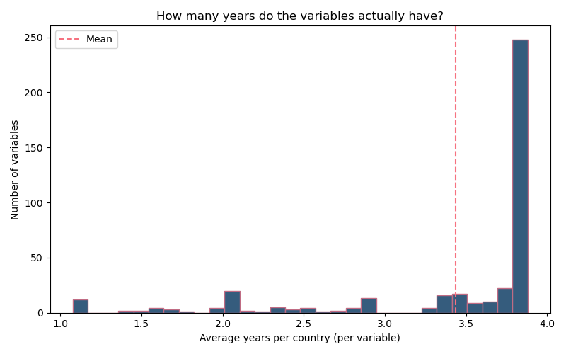
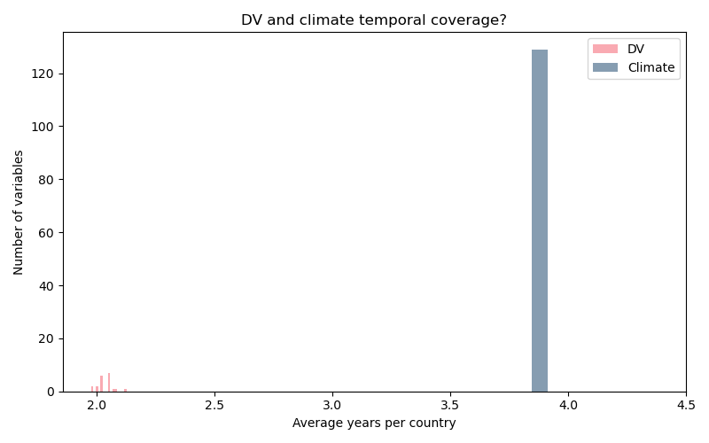
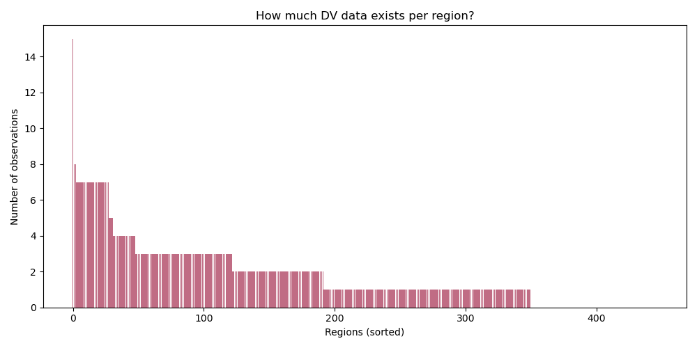
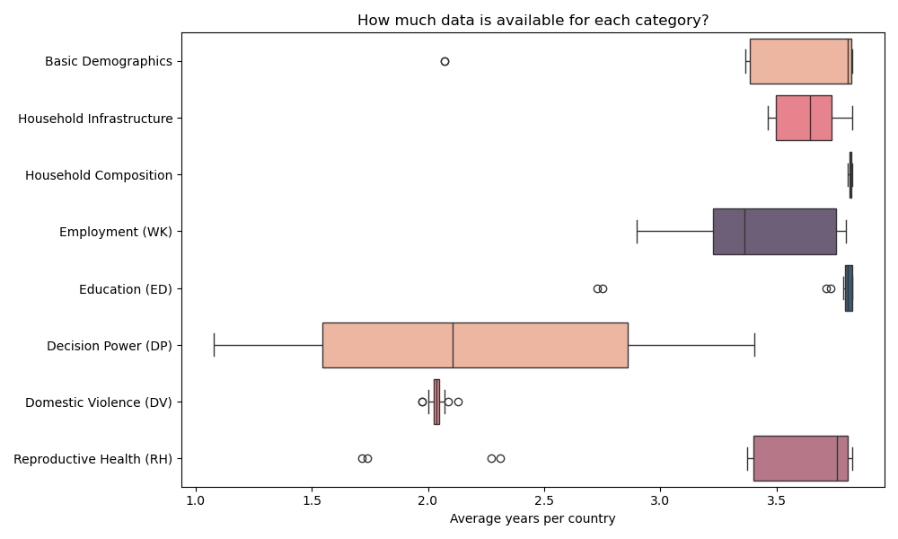

Because of the potential confounds in my Model 2 and questionable results
of Model 3, I looked at temporal coverage and overall data availability in
the LivWell dataset, to maybe find a workaround or decide to use a
different dataset.
I checked:
Firstly, DV availability and overall year coverage should be expected not to be that great. They collected roughly every five years over 20 years... so max 4 observations. And the DV module is new, so data should be even more sparse (which it is)
Country -> years available:
ARM [2016]
BEN [2017]
BFA [2010]
BGD [2007]
CIV [2012]
CMR [2004, 2011, 2018]
COD [2007, 2013]
COL [2000, 2005, 2010, 2015]
EGY [2014]
ETH [2016]
GAB [2012]
GHA [2008]
GTM [2015]
HND [2011]
HTI [2000, 2006, 2012, 2016]
IND [2006]
JOR [2007, 2012, 2017]
KEN [2003, 2008]
KHM [2000, 2005, 2014]
LBR [2007]
MLI [2006, 2012, 2018]
MOZ [2011]
MWI [2004, 2010, 2015]
NAM [2013]
NGA [2008, 2013, 2018]
PAK [2012, 2017]
PER [2000, 2004, 2007, 2009, 2010, 2011, 2012]
PHL [2008, 2013, 2017]
RWA [2010, 2015]
SEN [2017, 2018, 2019]
SLE [2013, 2019]
TGO [2013]
TJK [2012, 2017]
TLS [2009, 2016]
TZA [2010, 2015]
UGA [2006, 2011, 2016]
ZAF [2016]
ZMB [2007, 2013, 2018]
ZWE [2005, 2010, 2015]
Number of valid DV observations per country (excluding countries with 0 observations).
Peru 168 Cambodia 54 Philippines 51 Tanzania 46 Haiti 36 Zimbabwe 30 India 26 Timor-Leste 26 Zambia 24 Colombia 23 Cameroon 22 DR Congo 22 Mali 21 Nigeria 18 Kenya 16 Honduras 16
DV coverage is highly uneven across countries. Peru best by far.
Number of valid DV observations per region (top regions only).
Central 15 Southern 8 Western 8 ... ... Pasco 7 Huanuco 7 Ica 7 Ayacucho 7 San Martin 7 Junin 7 Madre de Dios 7 Piura 7 Cusco 7 Loreto 7 Lima + Callao 7 Puno 7
Most regions only appear in a few survey years. Problem for within-region longitudinal ideas.

Distribution of available years across all variables in LivWell. Most variables only contain a few years per country.

Climate indicators generally contain more survey years per country than domestic violence variables (DV is especially badly covered, because it is a new module in the survey!).

Number of available DV observations for each region, sorted from highest to lowest.

Distribution of temporal coverage across all variable categories.
Typical coverage: ~3.8 years/country Examples: DM_age_20.24_p_se .... 3.83 DM_marr_p_se ......... 3.83 DM_urban_p ........... 3.81
Typical coverage: ~3.7–3.8 years/country Examples: ED_litt_p_se ......... 3.83 ED_educ_years_mean ... 3.81 ED_secondary_p ........3.81
Typical coverage: ~3.8 years/country Examples: RH_contr_p_se ........ 3.83 RH_children_mean ..... 3.81 RH_modern_contr_p .... 3.81
Typical coverage: ~2.0 years/country Examples: DV_phys_p_se ......... 2.07 DV_phys_12m_p_se ..... 2.05 DV_sex_p ............. 2.02
Again, DV variables are covered much worse than most other categories.
Typical coverage: ~1.1–2.9 years/country Examples: DP_decide_money_p .... 2.86 DP_owns_land_p ....... 1.62 DP_contraception_p ... 1.08
Even worse than DV... unfortunate, because that was my next step in analysis.
Typical coverage: ~3.88 years/country Examples: pre_anom_mean12 ...... 3.88 tmp_anom_p3sd_share .. 3.88 spei03_max12 ......... 3.88
Climate indicators showed the highest and most uniform temporal coverage (makes sense because you can easily measure them).
Most demographic, education, reproductive-health, and climate indicators contain roughly 3-4 survey years per country.
Domestic violence variables usually contain only about 2 years, and many decision-power indicators contain only 1 year.
This is an issue for longitudinal analysis.
So in Conclusion: Within a region and year, all people experience the same heat level. I DO have many individuals, but that doesn't help... They don't compare “more heat vs less heat”. They only help measure DV more precisely at that one heat level. But all individuals SHARE the heat in their region. So I need regions across many years. Many individuals is NOT enough. So, individual-level comparisons don't say much about the effect of heat itself. To study heat effects, I need variation in heat across time (the same region in different years). So the problem is that I don’t have enough repeated, comparable time changes per region, so I can’t reliably see whether changes in heat are followed by changes in DV within the same place. Mathematically, I predict using beta*heat, and heat does NOT vary within a region. It's constant for everyone.